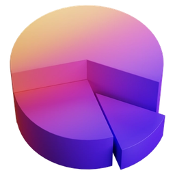
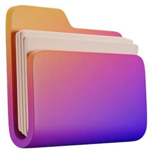
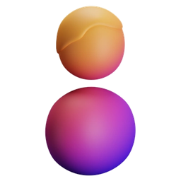

SGK Hizmet Listesi
Tek işyeri veya çoklu işyeri bazında hizmet listeleri saniyeler içinde; tüm işyerleri için toplu rapor ve Excel çıktısı.
Otomatik bildirimler, onaylar ve raporlarla rutin SGK işleri sizin yerinize sistem tarafından yürütülür. İş ve sosyal güvenlik hukuku, insan kaynakları ve işe alım danışmanlığıyla da yanınızdayız.


Altyapı sağladığımız iş ortaklarımızla birlikte her ay gerçekleşen otomatik işlemler.
sicil için her ay otomatik sağlık raporu onaylama
personel için her ay otomatik kimlik bildirimi
sicil için her ay iş kazası takibi
Bordro verileriniz doğrudan Segika'ya akar, ek veri girişi derdi ortadan kalkar. SGK'dan alınan verilerle bildirimler, onaylar ve raporlar kendiliğinden hazırlanır.
Rutin SGK işlerini sisteme bırakın; İK ve bordro ekipleriniz günlük tekrarlayan işler yerine stratejik projelere odaklansın.
SGK web servisleri ile entegre çalışarak onay bekleyen sağlık raporlarını kontrol eder ve belirlenen kurallara göre onaylama işlemini saniyeler içinde tamamlar. Tam denetimi elinizde tutmak isterseniz raporları tek tek inceleyip manuel de onaylayabilirsiniz.
Ücretsiz deneyinİşyeri sicilinize ait SGK sistemindeki iş kazalarını periyodik olarak tarar, yeni bir kayıt tespit edildiğinde yetkili kişilere anında e-posta gönderir. İş kazaları kazanın gerçekleştiği tarihten itibaren en geç 3 iş günü içinde SGK'ya bildirilmelidir.
Ücretsiz deneyinSGK verilerini çekerek personel hareketlerinizi izler; bulunduğunuz bölgeye göre kentsel alanda Emniyet'e, kırsal alanda Jandarma'ya bildirimi otomatik yapar. Siz yalnızca yetkilendirmeyi tamamlayın, gerisini sistem yönetsin.
Ücretsiz deneyinSGK'nın işe giriş-çıkış servislerine bağlı çalışır ve İŞKUR'un istediği formatta aylık işgücü çizelgesini üretir. Siz sadece onayı verirsiniz; birden fazla şubenin çizelgeleri tek seferde İŞKUR'a gönderilir.
Ücretsiz deneyinSon 6 ayda işe girenleri her hafta tarar; 2. ve 6. ayını doldurmasına 10 günden az kalan çalışanları tespit eder, raporu ilgili yöneticilere e-postayla iletir. SGK şifresi hatalı işyerleri ayrıca raporlanır.
Ücretsiz deneyinİşyerinizi seçmeniz yeterli: sistem SGK'dan son aylık bildirgeyi indirir, tüm çalışanlar için MYK kayıtlarını sorgular; belgesi olanları, süre sonlarını ve belgesi olmayanları otomatik raporlar.
Ücretsiz deneyinBorç sorgulamadan e-borcu yoktur belgesine, tahakkuktan maaş hesaplamaya kadar birçok işlem sadece birkaç tıklama uzağınızda. Raporlar Excel olarak dışa aktarılır.
Tek işyeri veya çoklu işyeri bazında hizmet listeleri saniyeler içinde; tüm işyerleri için toplu rapor ve Excel çıktısı.
Sicil bazlı aylık rapor; yalnızca TC kimlik numarasıyla personelin tüm giriş-çıkış geçmişi; bildirgeler PDF olarak.
Tüm sicillerin onaylı ve onay bekleyen belgeleri tek ekranda, filtrelenebilir şekilde.
Sicil geçmişi, ödeme hareketleri ve tahakkuk detayları sade, filtrelenebilir ve analiz edilebilir formatta.
5510 sayılı Kanun başta olmak üzere tüm teşvik ve sigorta kodlarına uygun tahakkuk raporları, toplu ve tek tuşla.
Tüm SGK sicil numaralarınızı tek panelden kontrol edin; borçlu sicilleri anında tespit edin.
Kamu ihaleleri ve resmi işlemler için tüm işyerlerinizin belgeleri birkaç saniyede hazır.
Geçmiş dönemden kalan ve sistemde bekleyen iade haklarınızı tespit edin; emanetler cebinizde kalmasın.
Tüm işyerlerinizin hak ediş durumu tek raporda; sicil bazlı ve dönemsel analiz.
Brütten nete, netten brüte; SGK işçi/işveren payı, gelir ve damga vergisiyle ayrıntılı maaş tablosu, Excel çıktısı.
İşyeri seç, çalışanları ekle: kıdem, ihbar ve kullanılmamış izin tazminatı tek tabloda hazır.
2. ve 6. ayına 10 günden az kalan çalışanlar her hafta raporlanır, yöneticilere e-postayla iletilir.
SGK verilerinden çalışan bazında analiz; İK kararlarınız için tek panelden erişim.
Sicil numarası, meslek kodu, işe giriş tarihi, yaş ve cinsiyet bilgileriyle tüm aktif çalışanlar tek listede.
Seçtiğiniz döneme göre ayrılma ve işe alım oranları; meslek kodu, yaş grubu ve cinsiyet bazında, dönemler arası karşılaştırmalı.
Yaş, cinsiyet ve meslek kodu dağılımı grafik ve tablolarla; uzun vadeli trendleri izleyin.
Sistem hataları otomatik ortadan kaldırır, her zaman günceldir ve sınırsız sistem desteği sunar. Cari ay hesaplamanız için iş süreçlerinize en uygun yöntemi seçin.
06111Genç ve Kadın İstihdam14857Engelli İstihdam05746AR-GE03294Sosyal Yardım Alanların İstihdamı02828Sosyal Hizmetlerden Yararlanan Çocuklar16322 · 26322Yatırım Belgesi055105 Puanlık SGK İndirimi17103 · 27103İlave İstihdam06645İşbaşı Eğitim07319Kredi ve Kar Payı Desteği07252Pandemide Normalleşme17256İstihdama Dönüş27256İlave İstihdam46486 · 56486 · 66486Bölgesel İlave 6 PuanGeriye dönük SGK teşvikleri artık alınamıyor; geçmiş dönem hesaplaması karşılaştırma ve teşvik kaybı tespiti içindir. Yeni çıkan teşvikler cari ay içinde sisteme eklenir.
Luca, Logo, Mikro ve Eta gibi yaygın bordro programlarıyla tam entegrasyon; web API altyapısı sayesinde diğer yazılımlarınıza da sorunsuz bağlanır. API anahtarınızı tanımlayıp tek tuşla veri akışını başlatabilirsiniz.
Ücretsiz deneyinTam entegrasyonTam entegrasyonTam entegrasyonVeri alma Veri alma
Veri alma Web APIDiğer yazılımlar
Web APIDiğer yazılımlar Veri alma
Veri alma Veri alma
Veri almaHukuki uyum sayesinde beklenmedik maliyet ve yaptırımların önüne geçer, etkin İK uygulamalarıyla çalışan bağlılığı ve verimliliği yükselir; profesyonel işe alım süreçleri yetenek havuzunuzu güçlendirir.
Ölçeğine bakılmaksızın şartları sağlayan tüm özel sektör işletmeleri SGK teşviklerinden faydalanabilir; SGK araçları ise her sektörde işleri kolaylaştırır.
Personel sirkülasyonu yüksek; kaçan bir kişiyi bile riske atmamak için teşvik takibi şart.
Teşvik süreleri bitmeden değişen personellerle teşvik süreleri uzar, indirimler eksilmez.
Taşeron çalışan sayısı hesaba katılır; tüm işyerlerinin iş kazası kontrolleri tek panelden.
Mağaza sayısı arttıkça işyeri bazında takip zorlaşır; tek panel ve bordro entegrasyonu.
AR-GE teşvikleri de dikkate alınarak teşvik hesaplaması yapılır.
29 ve 1 numaralı belge türleri dikkate alınarak teşvik hesaplanır.
Sezonluk alımlarda yoğun giriş-çıkış; teşvik ve kimlik bildirimleri tek panelden.
Zincir işletmelerde tüm işyerlerinin teşvik ve SGK işlemleri tek panelden.
Çalışan sayısı ne olursa olsun teşviklerden tam faydalanma ve zaman kazancı.
Binlerce işyeri olsa da tek panelden yönetim; bordro entegrasyonuyla hatalar engellenir.
Teşvik için ayrılan zaman ve iş gücü maliyetinden kurtulun, hatta yeni bir gelir elde edin.
Çok müşteriye hızlı hizmet: teşvik raporları, sağlık raporu, iş kazası, tahakkuk, borç, emanet.
Paketler aylıktır; fiyat çalışan sayısına göre değişir. 500'den fazla çalışan için fiyat teklifi alınız.
500’den fazla çalışan için özel teklif alın.
SGK Yardımcı Araçlar, Vizite, Kimlik Bildirimi, İŞKUR, MYK, İK Raporları ve İK Araçları.
Ücretsiz deneyinYürürlükteki tüm teşvik kodlarını çalışan bazında hesaplayın; teşvik raporlarını tek panelden alın.
Ücretsiz deneyinİki paketin tamamı ve Luca, Mikro, Eta, özel entegrasyon.
Ücretsiz deneyinÇok sayıda işyeri ve sicille çalışan kurumlar için ihtiyaca göre fiyatlandırma.
İletişime geçinPaketlerin içerdiği modülleri yan yana karşılaştırın.
| PaketlerSize uyan paketi seçin | SGK Otomasyon1.600 TL25 çalışana kadar · aylıkÜcretsiz deneyin | SGK Teşvik1.850 TL25 çalışana kadar · aylıkÜcretsiz deneyin | Teşvik ve Otomasyon2.600 TL25 çalışana kadar · aylıkÜcretsiz deneyin |
|---|---|---|---|
| Teşvik | |||
| SGK Teşvik Hesaplama ve Raporları | Yok | Var | Var |
| SGK otomasyonu | |||
| SGK Yardımcı Araçlartahakkuk, hizmet listesi, borç, emanet, e-borcu yoktur, müfredat, asgari ücret desteği | Var | Yok | Var |
| SGK Vizitesağlık raporu takibi ve otomatik onay, iş kazası takibi, mahsuplaşma | Var | Yok | Var |
| Otomatik Emniyet ve Jandarma Kimlik Bildirimi | Var | Yok | Var |
| İŞKUR İşgücü Çizelgesi ve Otomatik Bildirimi | Var | Yok | Var |
| MYK Belge Sorgulama ve İşyeri Analizi | Var | Yok | Var |
| İK Raporları ve Araçlarıdeneme ve iş güvencesi, tazminat, çalışan analizi | Var | Yok | Var |
| Entegrasyon | |||
| Luca, Mikro, Eta ve Özel Entegrasyon | Yok | Yok | Var |
Kaynak: segika.com fiyatlandırma sayfası. KDV ve 500 çalışan üzeri fiyatlar için iletişime geçin.
Hangi modülün veya danışmanlık hizmetinin size uygun olduğunu birlikte belirleyelim.

20 Bin+firma / ay
61 Bin+sicil / ay
1,7 Mn+çalışan / ayFormu doldurun, ekibimiz sizinle iletişime geçsin.
Ekibimiz sizinle iletişime geçecek. Hemen konuşmak isterseniz WhatsApp'tan yazın.
WhatsApp ile yazınÜcretsiz deneyin; bildirimleri, onayları ve raporları sisteme bırakın.